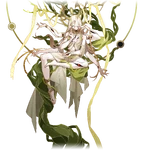

Yaoshi
Aeon of AbundanceLore
Yaoshi adalah Aeon yang memimpin Path of Abundance, mewakili kehidupan abadi, pertumbuhan tak terbatas, dan penyembuhan tanpa akhir. THEY adalah "The Abundance" yang memberikan keabadian kepada siapa saja yang memintanya, tanpa mempedulikan konsekuensi seperti mara-struck atau penderitaan abadi.
Yaoshi pernah memberikan Ambrosial Arbor kepada Xianzhou Alliance, membuat penduduknya abadi. Namun, keabadian itu membawa kutukan mara-struck (gila karena regenerasi tak terkendali). Yaoshi juga memberkati Denizens of Abundance (seperti borisin, heliobi, dan makhluk lain) dengan umur panjang, tapi sering berubah menjadi monster karena keabadian yang tidak alami.
Yaoshi adalah salah satu Aeon paling ditakuti oleh Lan (The Hunt), karena Abundance dianggap sebagai sumber kekacauan terbesar. Lan secara aktif memburu pengikut Yaoshi untuk memutus rantai penderitaan abadi. Di lore Penacony dan Xianzhou, Yaoshi sering digambarkan sebagai "ibu yang kejam" — memberikan hadiah terindah (kehidupan) tapi tanpa batas, sehingga menjadi racun.
Nama "Yaoshi" berarti "Penyembuh" atau "Obat" dalam bahasa Cina. Pronoun: THEY/THEM. Quote ikonik: "The Abundance is the most beautiful blessing... and the cruelest curse." — Jing Yuan.
Emanator
Emanator Abundance disebut Disciples of Sanctus Medicus atau makhluk yang diberkati langsung oleh Yaoshi. Mereka mendapatkan regenerasi luar biasa dan kekuatan penyembuhan, tapi sering kehilangan kewarasan karena mara.
Emanator terkenal termasuk:
- Shuhu — Lord Ravager yang diberkati Yaoshi, tubuhnya tumbuh tanpa henti dan menjadi monster raksasa.
- Tingyun (Phantylia) — sebenarnya Phantylia menyamar sebagai Tingyun, tapi bukan Emanator Abundance murni (lebih Destruction).
- Danheng's past life (Imbibitor Lunae) — terhubung dengan Abundance melalui Vidyadhara dan Ambrosial Arbor.
Borisin (seperti Hoolay) dan Heliobi juga mendapat berkah Abundance dari Yaoshi, membuat mereka hampir tak bisa dibunuh. Tidak ada Emanator baru confirmed setelah Shuhu, tapi pengaruh Yaoshi masih kuat di berbagai planet.
Disciples of Sanctus Medicus (organisasi kuno) adalah pengikut fanatik yang percaya keabadian adalah tujuan tertinggi, meski sering berakhir tragis.
Penampilan
Yaoshi muncul sebagai sosok humanoid raksasa yang indah dan menakutkan, dengan tubuh ditutupi tumbuhan hijau emerald, daun, dan bunga yang tumbuh terus-menerus. Rambutnya seperti aliran air hijau yang mengalir, mata emas bercahaya penuh kasih sayang tapi dingin.
Tubuhnya dikelilingi aura kehidupan yang berdenyut — vine, akar, dan serangga kecil yang lahir dan mati dalam sekejap. Di Simulated Universe, Yaoshi terlihat seperti "dewi kehidupan" dengan sayap daun dan mahkota bunga raksasa, tapi keindahannya menyembunyikan horor regenerasi tak terkendali.
Radiansinya hijau keemasan, seperti hutan abadi yang menelan segalanya. Suara Yaoshi lembut dan menenangkan, tapi kata-kata mereka sering membawa kutukan keabadian.